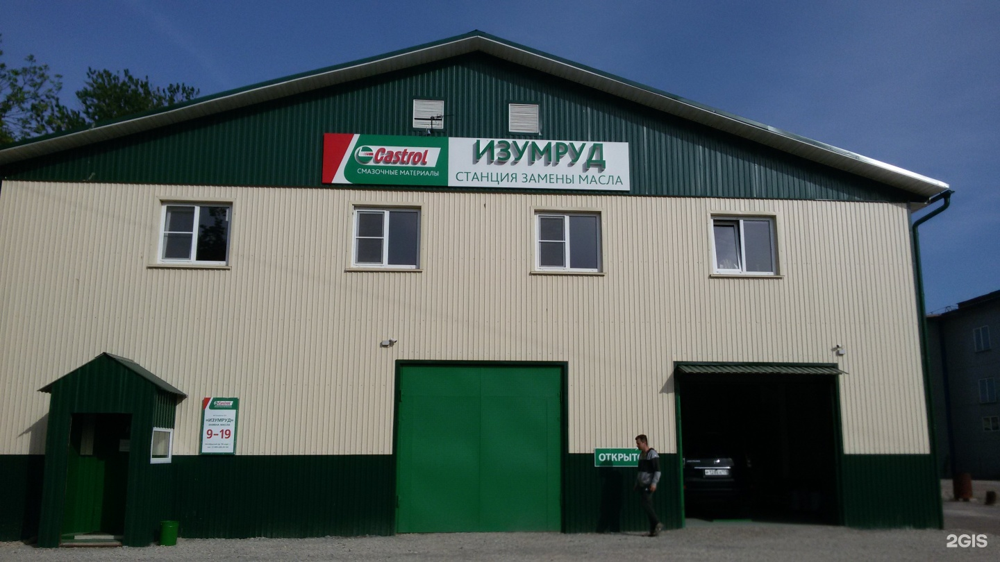
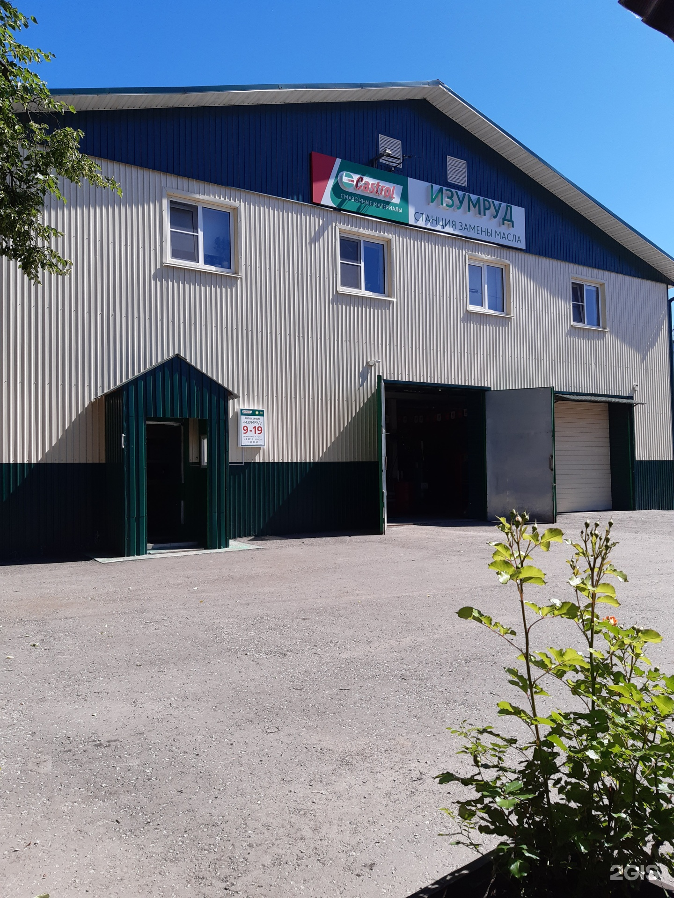
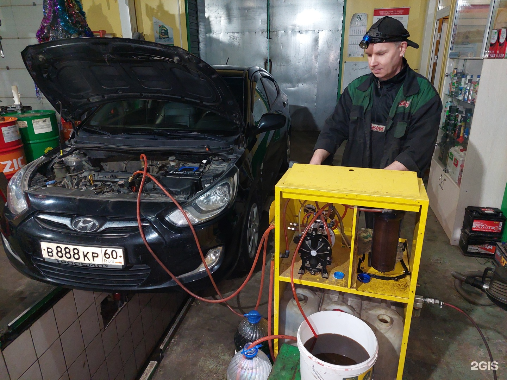
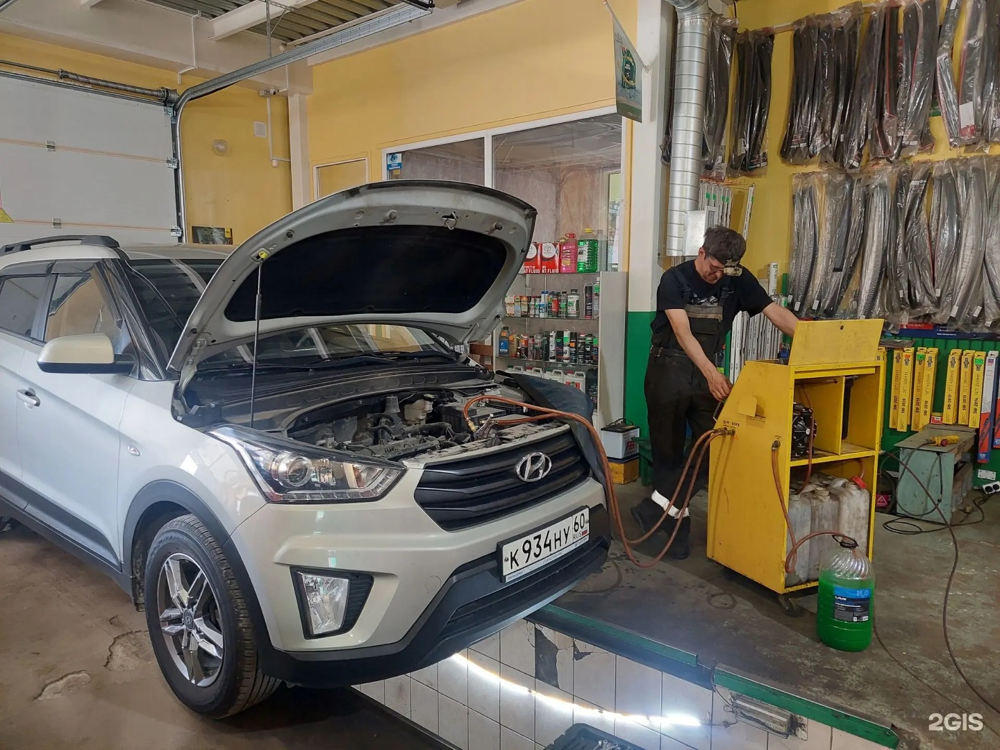

Автосервис · Центр
Изумруд
Замена масла и ремонт ходовой
Перед визитом уточните работы и стоимость по телефону.
Часы работы
Пн–Вс 09:00–19:00

- Замена масла и фильтровБесплатноБесплатная замена масла и фильтров ДВС при покупке материалов у нас
- Диагностика тех.жидкостейБесплатноДиагностика тех.жидкостей бесплатно!
- Замена масла в МКПП1000–1500 ₽
Без стоимости расходных материалов
Цены
Прайс · 53 позиции
Дата опубликованного прайса: 07.10.2026. Актуальную стоимость уточняйте по телефону.
Прайс в 2ГИСВсе 53 позиции
Замена масла и фильтров
Бесплатная замена масла и фильтров ДВС при покупке материалов у нас
Бесплатно
Диагностика тех.жидкостей
Диагностика тех.жидкостей бесплатно!
Бесплатно
Замена масла в МКПП
1000–1500 ₽
Замена масла в ДСГ (Роботе)(цена от)
от 2000–2500 ₽
Снятие - установка защиты
от 300 ₽
Снятие - установка поддона АКПП
3000 ₽
Замена масла в раздаточной коробке
1000–1500 ₽
Замена масла в переднем мосту(редукторе)
1000–1500 ₽
Замена масла в заднем мосту ( редукторе )(цена от)
от 1000–1500 ₽
Диагностика трансмис. жидкости
1–200 ₽
Полная замена декстрона ( в АКПП )
2500–3500 ₽
Частичная замена декстрона в АКПП
2000–2500 ₽
Снятие-установка поддона АКПП с чисткой (заменой) фильтра АКПП
2500–3000 ₽
Полная замена антифриза с промывкой (через аппарат )(цена от)
от 2500–3000 ₽
Замена топливного фильтра (дизель)
1000–1500 ₽
Замена топливного фильтра (бензин)
1000–1500 ₽
Замена воздушного фильтра
1–300 ₽
Замена салонного фильтра
1–300 ₽
Замена свечи зажигания (за шт.)
300–375 ₽
Полная замена тормозной жидкости(через аппарат)
2500–3000 ₽
Полная замена жидкости в гидроусилителе (через аппарат)
2500–3000 ₽
Шприцовка крестовины (кардана)
300 ₽
Очистка кондиционера(цена от)
от 1500 ₽
Замена проточного фильтра АКПП
1500–2000 ₽
Установка ветровиков(за шт)
350 ₽
Заправка кондиционера(цена от)
от 2000 ₽
Компьютерная диагностика
500 ₽
Замена передних тормозных колодок(цена от)
от 1000 ₽
Замена задних тормозных колодок(цена от)
от 1200 ₽
Замена аккумулятора
300 ₽
Замена бачка охлаждающей жидкости
1000 ₽
Регулировка стояночного (ручного) тормоза(цена от)
от 1000 ₽
Замена (заднего и переднего) тормозного цилиндра(цена от)
от 1000 ₽
Прокачка тормозов(цена от)
от 500 ₽
Замена механ.натяж. ремня привода генератора(цена от)
от 1500 ₽
Ремонт центрального замка(цена от)
от 1000 ₽
Ремонт замка двери (цена от)
от 1500 ₽
Замена тросов ручника(цена от)
от 1500 ₽
Замена задних стоек амортизаторов(цена от)
от 1500 ₽
Замена передних стоек амортизаторов(цена от)
от 1500 ₽
Замена трубок тормозных(цена от)
от 1000 ₽
Замена переднего подшипника ступицы(цена от)
от 2000 ₽
Замена заднего подшипника ступицы(цена от)
от 1800 ₽
Замена колодок ручного тормоза(цена от)
от 2000 ₽
Замена стоек стабилизатора(цена от)
от 700 ₽
Замена сайлентблоков задней балки(цена от)
от 1500 ₽
Замена сайлентблоков заднего подрам.(цена от)
от 1500 ₽
Чистка дросселя(цена от)
от 1500 ₽
Регулировка углов сход-развал(цена от)
от 1500 ₽
Замена задних барабанных тормозных колодок (цена от)
от 2200 ₽
Замена передних тормозных колодок и дисков
2000 ₽
Снятие-установка стартера (цена от)
от 1500 ₽
Снятие-установка генератора (цена от)
от 1500 ₽
Ничего не найдено. Попробуйте другое название или выберите «Все».
«От» означает начальную стоимость позиции.
Услуги
С чем можно обратиться
Позвоните в «Изумруд»
ПозвонитьОтзывы
Что отмечают посетители
В одном отзыве отмечают оперативную замену масла и помощь с выбором масла и фильтра.
Клиент, проезжавший через Псков, рассказывает, что смог записаться на ближайшее время и заменить масло перед продолжением пути.
Другой посетитель благодарит за осмотр колодок и объяснение, почему их пока можно не менять.
Пересказ мнений посетителей без имён авторов. Все отзывы в 2ГИС
Фото
Станция и боксы



Контакты